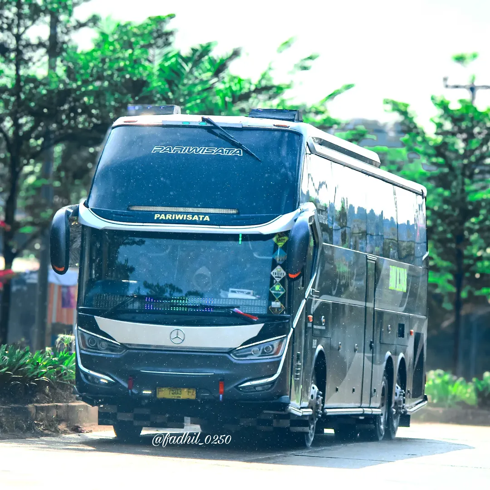
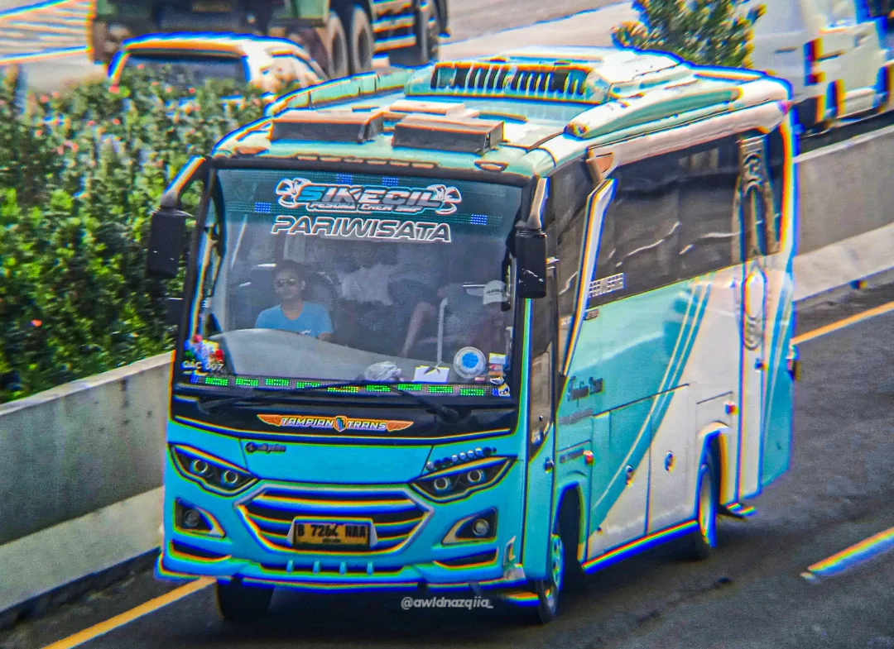
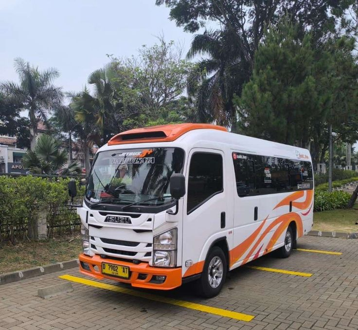
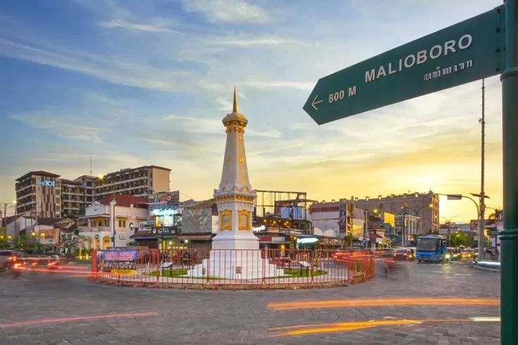
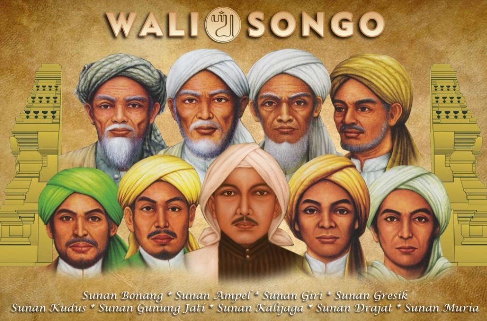
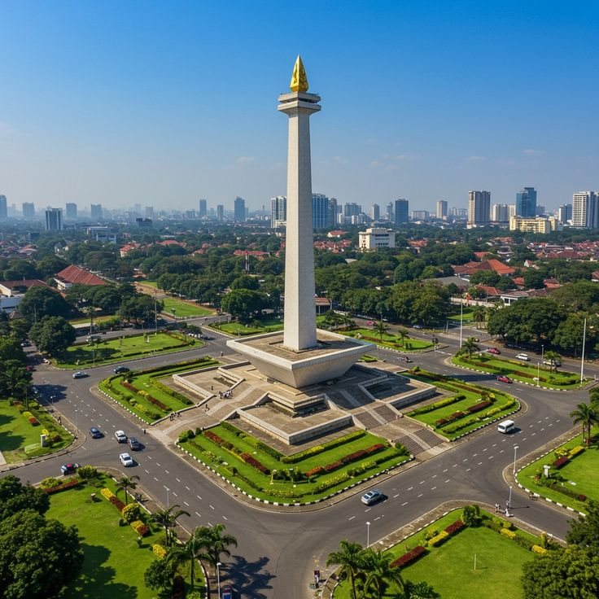
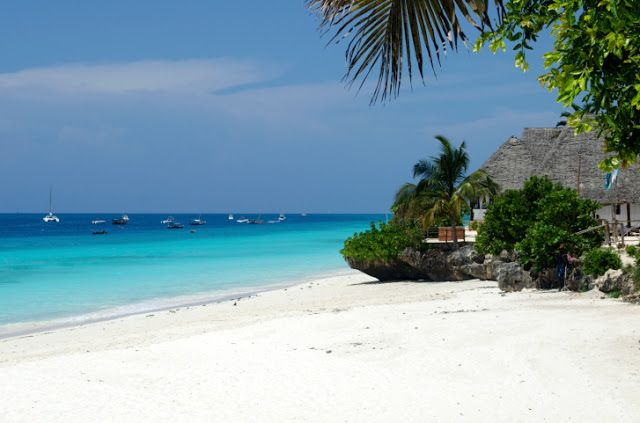
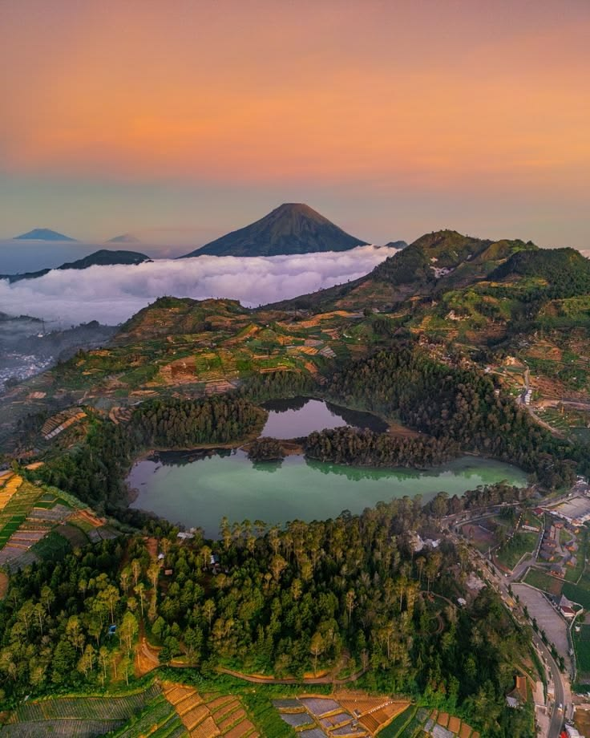

Armada lengkap dari Big Bus 59 seat hingga Hiace Premium. Destinasi wisata alam, pantai, gunung, dan ziarah religi. Perjalanan nyaman, aman, dan berkesan.
Destinasi
Armada Premium
Pelanggan Puas

Berbagai pilihan armada untuk perjalanan wisata, ziarah, study tour, dan rombongan

Armada super besar, cocok buat bawa rombongan satu keluarga.

Armada super besar dengan fasilitas mewah, cocok untuk rombongan besar dan study tour.

Bus besar dengan konfigurasi 2-2, legroom luas, ideal untuk perjalanan jauh.

Reclining seat, legroom ekstra, cocok untuk perjalanan wisata dan ziarah grup.

Bus medium nyaman untuk grup menengah, mudah manuver di jalan wisata.

Mewah dan eksklusif untuk private trip, keluarga, atau VIP.
Pilihan destinasi terbaik untuk liburan keluarga, study tour, maupun perjalanan religi

Sunrise spektakuler, lautan pasir, dan kawah aktif. Paket jeep tour tersedia.

Masjid modern yang luas dan estetik, dikelilingi danau. Pas buat ibadah sekaligus santai.

Kota wisata yang gak pernah sepi, terkenal dengan budaya, kuliner, dan tempat jalan-jalan yang seru.

Ziarah ke seluruh makan Wali Songo, kawasan religi bersejarah.

Ikon Jakarta yang terkenal, bisa naik ke atas buat liat pemandangan kota. Area sekitarnya juga enak buat jalan santai.

Pantai yang deket dari Jakarta, pasirnya luas dan ombaknya santai. Cocok buat liburan singkat, main air, atau liat sunset.

Kawah Sikidang, Telaga Warna, dan budaya Jawa kuno.

Warisan dunia, destinasi wajib study tour dan wisata religi.
Sewa armada + paket wisata dengan harga kompetitif, transparan tanpa biaya tersembunyi
/orang (Jakarta - Bandung)
/orang (dalam kota)
/orang (Jakarta-banten)
/10 jam (area Jatim/Jabar)
/12 jam (termasuk BBM & driver)
/12 jam (Jakarta & sekitarnya)
Tronton Bus, Big Bus, Medium Bus, Elf, Hiace, selalu ready
Tanpa biaya tersembunyi
Respons cepat via WA & call center
Keamanan prioritas
Rute ziarah wali & religi